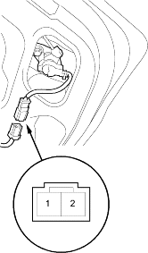
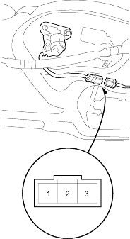

- Open the trunk lid.
- Disconnect the 2P connector from the key cylinder switch.

Terminal side of male terminals
- Check for continuity between the terminals.
- There should be continuity between the No. 1 and No. 2 terminals when the trunk key cylinder switch is UNLOCK position.
- Remove the tailgate trim panel (see page 20-209).
- Open the tailgate.
- Disconnect the 3P connector from the key cylinder switch.

Terminal side of male terminals
- Check for continuity between the terminals.
- There should be continuity between the No. 1 and No. 3 terminals when the tailgate key cylinder switch is LOCK position.
- There should be continuity between the No. 1 and No. 2 terminals when the tailgate key cylinder switch is UNLOCK position.